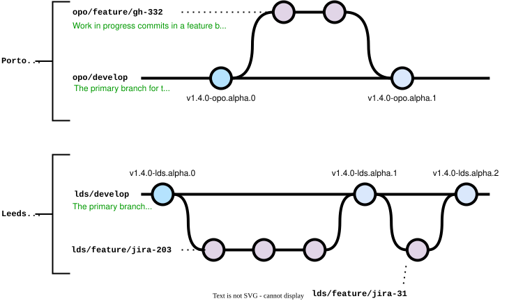
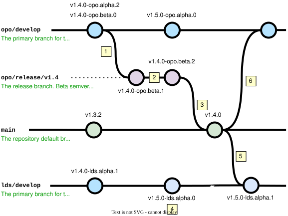
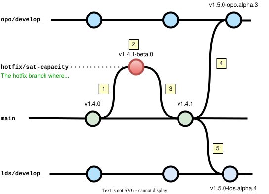
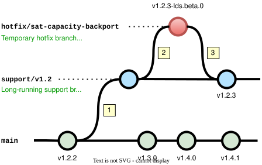

inner source
This software development lifecycle is optimised for a service with multiple teams contributing to it concurrently.
develop branch with cross-team synchronisation during regular releases.The branching model used in this SDLC is a derivative of GitFlow with each team having their own <team>/develop branch. The complexity of this model is only worthwhile when multiple teams are working on the same service concurrently. The Service SDLC provides similar features with a simpler branching model if a single primary team exists that just needs to accept external contributions.
Alpha, beta or production-ready builds are signalled by git tags which conform to our semantic versioning conventions. For example:
v1.3.3 is the latest production release. The last team feature release was v1.3.0 since which there have been 3 hotfixes.v1.4.0-opo.beta.2 is the next release driven by the opo team. Since the initial release build there have probably been 2 minor bugfixes.v1.5.0-lds.alpha.3 is the alpha version in the lds/develop branch that is deployed to one of the Leeds team QA environments with 3 unreleased changes.Read more about our SemVer conventions in this document.
The key concept in this SDLC is that each team with its own deployment has its own <team>/develop branch. The team follows its own development process around their <team>/develop branch, typically using short-lived feature branches like <team>/feature/xxx for each change.

alpha releases from their <team>/develop branch for their local QA environment(s). In this way they can treat their <team>/develop branch like an environment branch.develop branches similar to their own feature branches: a set of changes that need awareness and timely review but don’t yet directly impact.ppb/develop and fd/develop for PPB and FanDuel teams. But the number of develop branches and the names used for teams depends on your context and do not need to relate to divisions.Work from all the <team>/develop branches is integrated into a single production branch (main or master) through team major/minor releases. Only one major/minor release can occur at any time. The release changes are synchronised back into all <team>/develop branches before the next release.

The diagram shows an example release:
opo) team starts a release by creating the opo/release/v1.4 branch from their current opo/develop branch. They tag this branch as v1.4.0-opo.beta.0 which triggers a deployable beta build for QA.opo/release/v1.4 is merged into the main production branch via a PR and tagged as v1.4.0 to denote the final production build.lds/develop branch. Because 1.4 is now an active beta release, they increment their next alpha tag version to indicate the changes are now targeted at the 1.5 release.v1.4.0 release by merging the changes into main, the Leeds team synchronise their develop branch by merging the changes from main back into their own lds/develop branch.opo/develop branch.A hotfix is a change correcting a fault that needs to be released as quickly as possible (often under incident conditions). Hotfixes can be applied at any time as patch releases via a /hotfix/<name> branch which is merged directly into the production branch.

This diagram shows an example hotfix. A performance regression is detected on Friday by the Porto team in the latest v1.4.0 release which is expected to cause capacity problems on Saturday. They take the operational decision to fix forward:
/hotfix/sat-capacity hotfix branch is created.v1.4.1-opo.beta.0 to allow beta testing and verification.main and tagged as a patch release v1.4.1.opo/develop branch with main to integrate the hotfix.lds/develop branch to integrate the hotfix. They may not do this immediately but must do this before starting their next release.Hotfixes can be applied during a major/minor release. In such cases the relevant release branch must also be synchronised with main to ensure the hotfix is included during beta testing.
This SDLC expects each team to own and manage their own deployment(s). The deployment process itself will vary by team based on their tools, infrastructure and desired topology. This SDLC simply promotes the use of semver tags to signal that a build should be created and made available for all teams for deployment if desired.
Not all teams will have the same version deployed. Older versions should not be the target of new features, but must be supported until a team has migrated to the latest release. To support older versions hotfixes can be applied to any previous version on a /support/<version> branch.

This diagram shows an example support hotfix. The Leeds team realises that the performance regression detected by the Porto team is also present in their currently deployed v1.2.2 service. As a precaution they decide to also apply the fix but are not yet ready to upgrade to the latest v1.4.1 version that includes it. So they apply a support hotfix:
support/v1.2 branch is created from the latest v1.2.x release tag (v1.2.2). This is the long-running support branch and will be used for all further v1.2.x releases./hotfix/sat-capacity-backport hotfix branch is created, and the mitigating commit is applied. This is tagged as v1.2.3-lds.beta.0 to allow beta testing and verification.support/v1.2 and tagged as a patch release v1.2.3 which the Leeds team can now deploy to update their older version with an isolated fix.This SDLC is setup using the git flutter init command. At this early point in its wider adoption the Inner Source Team are providing direct support for setup so please get in touch and we will go through the available options and help you get started.
This SDLC is supported by the git flutter CLI tool. Using this tool helps prevent common mistakes like starting concurrent releases and saves you time by shortening common commands in this workflow.
Two teams (ppb and fd) are working with the parallel teams SDLC. As a FanDuel (fd) engineer I want to start a new feature. I use the feature command to create a feature branch, with my team automatically detected from my current branch of fd/develop.
$ git flutter feature my-new-thing --yes --no-check-version
Creates a feature branch named 'fd/feature/my-new-thing' from the source branch 'fd/develop' and pushes it to origin.
i Updating from origin
i Creating branch 'fd/feature/my-new-thing'
✔ The feature branch 'fd/feature/my-new-thing' was successfully createdTwo teams (ppb and fd) are working with the parallel teams SDLC with both teams having merged several features into their develop branches. The status command shows the state and tags of the key repository branches alongside my current feature branch.
$ git flutter status --no-check-version
fd/feature/my-new-thing (current)
main
i v1.3.2
ppb/develop
i v1.4.0-ppb.alpha.3
✔ 3 ahead of main
fd/develop
i v1.4.0-fd.alpha.5
✔ 5 ahead of mainTwo teams (ppb and fd) are working with the parallel teams SDLC with both teams having merged several features into their develop branches. As a FanDuel (fd) engineer I can use the release command to start a release.
$ git flutter release 1.4 --yes --no-check-version
Creates a release branch named 'fd/release/1.4' from the current team develop branch 'fd/develop', and pushes it to origin.
i Updating from origin
i Creating branch 'fd/release/1.4'
✔ The release branch 'fd/release/1.4' was created
You can now raise a PR to merge the release into main, or use 'git flutter tag' to create a beta build.I want to tag a release branch and specify the full semver tag required.
$ git flutter tag 1.4.0-fd.beta.0 --push --yes --no-check-version
Tags the branch 'fd/release/1.4' with the tag 'v1.4.0-fd.beta.0', and pushes it to remote.
✔ The 'v1.4.0-fd.beta.0' version tag was created
✔ The 'v1.4.0-fd.beta.0' version was pushed to remoteTwo teams (ppb and fd) are working with the parallel teams SDLC. FanDuel (fd) have a release in progress so as a PPB engineer I am prevented from starting another release until that release is completed or cancelled.
$ git flutter release a-named-release --yes --no-check-version
An ERROR occurred:
✘ there is 1 active release(s): 'fd/release/1.4'
Command help is available using the --help flag.
Support is available in Slack channel #inner-source.Two teams (ppb and fd) are working with the parallel teams SDLC. The FanDuel (fd) team started a release which is currently being tested. The status command shows the active release.
$ git flutter status --no-check-version
main (current)
i v1.3.2
ppb/develop
i v1.4.0-ppb.alpha.3
✔ 3 ahead of main
fd/develop
i v1.4.0-fd.alpha.5
✔ 5 ahead of main
fd/release/1.4
i v1.4.0-fd.beta.0
✔ 5 ahead of mainTwo teams (ppb and fd) are working with the parallel teams SDLC. The FanDuel (fd) team have just completed a release by merging to main. The status command shows how the develop branches now lag behind main and require a sync.
$ git flutter status --no-check-version
main (current)
i v1.4.0
ppb/develop
i v1.4.0-ppb.alpha.3
! 6 behind and 3 ahead of main
fd/develop
i v1.4.0-fd.alpha.5
! 1 behind mainAfter merging a release branch into main, I use the tag command to create a new minor release tag by incrementing the previous semver tag.
$ git flutter tag minor --push --yes --no-check-version
Tags the branch 'main' with the tag 'v1.5.0', and pushes it to remote.
✔ The 'v1.5.0' version tag was created
✔ The 'v1.5.0' version was pushed to remoteTwo teams (ppb and fd) are working with the parallel teams SDLC. The FanDuel (fd) team have just completed a release by merging to main. As a PPB engineer I need to sync the release back into my develop branch.
$ git flutter sync --force --yes --no-check-version
Merges the branch 'main' into branch 'ppb/develop', and pushes it to origin.
i Merging branches
i Pushing branch to origin
✔ Merged and pushed, all now up to date